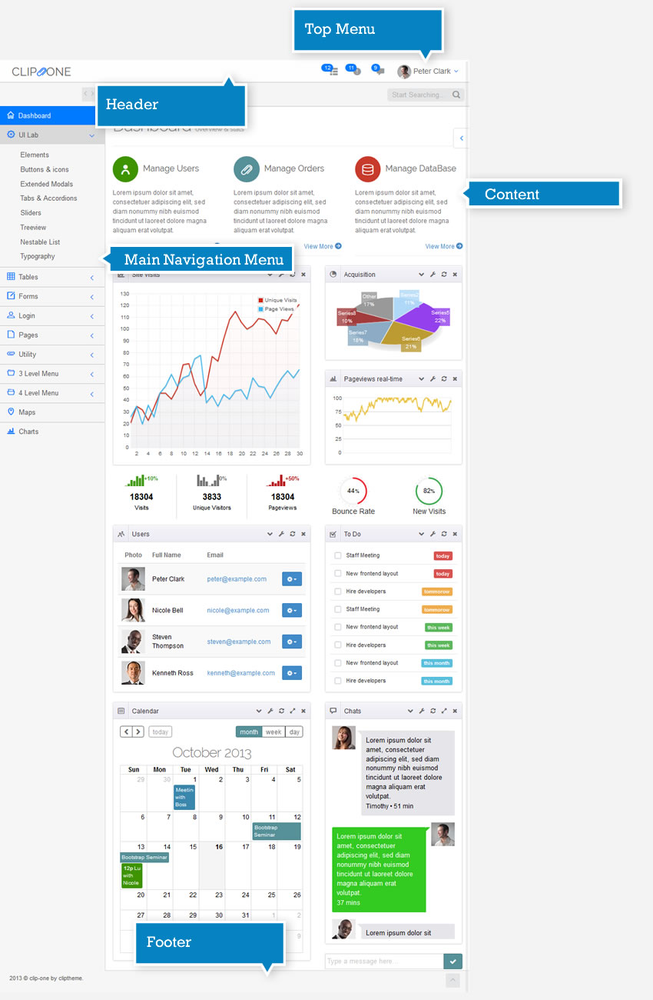

Content
It includes the breadcrumbs, the quick search form, the page title and the page main content.
To create a new page, you can use
pages_blank_page.html
which provides basic page layout which you can extend and modify further.
Responsive Admin Template build with Twitter Bootstrap 3
Clip-One is the brand new, cutting-edge, super flexible, totally responsive administration theme based on Framework Bootstrap 3. You can use Clip-One in a simple and intuitive way for all your backend applications and thanks to the several customization options you will also be able to customize the template style, color and layout, according to your taste and preferences.
It does not matter where you will open Clip-One: Be it on smart phones, tablets or computer desktops, it will perfectly adapt to all your electronic devices.
All template pages have a fixed structure, including the following elements:

The template Header includes the logo and the Top Menu.
<!-- start: HEADER --> <div class="navbar navbar-inverse navbar-fixed-top"> <!-- start: TOP NAVIGATION CONTAINER --> <div class="container"> <div class="navbar-header"> <!-- start: RESPONSIVE MENU TOGGLER --> <button data-target=".navbar-collapse" data-toggle="collapse" class="navbar-toggle" type="button"> <span class="clip-list-2"></span> </button> <!-- end: RESPONSIVE MENU TOGGLER --> <!-- start: LOGO --> <a class="navbar-brand" href="index.html"> CLIP<i class="clip-clip"></i>ONE </a> <!-- end: LOGO --> </div> <div class="navbar-tools"> <!-- start: TOP NAVIGATION MENU --> <ul class="nav navbar-right"> <!-- start: TO-DO DROPDOWN --> <li class="dropdown"> <a data-toggle="dropdown" class="dropdown-toggle" href="#"> <i class="clip-list-5"></i> <span class="badge"> 12</span> </a> <ul class="dropdown-menu todo"> <li> <span class="dropdown-menu-title"> You have 12 pending tasks</span> </li> <li> <div class="drop-down-wrapper"> <ul> <li> <a class="todo-actions" href="javascript:void(0)"> <i class="icon-check-empty"></i> <span class="desc" style="opacity: 1; text-decoration: none;">Staff Meeting</span> <span class="label label-danger" style="opacity: 1;"> today</span> </a> </li> <li> <a class="todo-actions" href="javascript:void(0)"> <i class="icon-check-empty"></i> <span class="desc" style="opacity: 1; text-decoration: none;"> New frontend layout</span> <span class="label label-danger" style="opacity: 1;"> today</span> </a> </li> <li> <a class="todo-actions" href="javascript:void(0)"> <i class="icon-check-empty"></i> <span class="desc"> Hire developers</span> <span class="label label-warning"> tommorow</span> </a> </li> <li> <a class="todo-actions" href="javascript:void(0)"> <i class="icon-check-empty"></i> <span class="desc">Staff Meeting</span> <span class="label label-warning"> tommorow</span> </a> </li> <li> <a class="todo-actions" href="javascript:void(0)"> <i class="icon-check-empty"></i> <span class="desc"> New frontend layout</span> <span class="label label-success"> this week</span> </a> </li> <li> <a class="todo-actions" href="javascript:void(0)"> <i class="icon-check-empty"></i> <span class="desc"> Hire developers</span> <span class="label label-success"> this week</span> </a> </li> <li> <a class="todo-actions" href="javascript:void(0)"> <i class="icon-check-empty"></i> <span class="desc"> New frontend layout</span> <span class="label label-info"> this month</span> </a> </li> <li> <a class="todo-actions" href="javascript:void(0)"> <i class="icon-check-empty"></i> <span class="desc"> Hire developers</span> <span class="label label-info"> this month</span> </a> </li> <li> <a class="todo-actions" href="javascript:void(0)"> <i class="icon-check-empty"></i> <span class="desc" style="opacity: 1; text-decoration: none;">Staff Meeting</span> <span class="label label-danger" style="opacity: 1;"> today</span> </a> </li> <li> <a class="todo-actions" href="javascript:void(0)"> <i class="icon-check-empty"></i> <span class="desc" style="opacity: 1; text-decoration: none;"> New frontend layout</span> <span class="label label-danger" style="opacity: 1;"> today</span> </a> </li> <li> <a class="todo-actions" href="javascript:void(0)"> <i class="icon-check-empty"></i> <span class="desc"> Hire developers</span> <span class="label label-warning"> tommorow</span> </a> </li> </ul> </div> </li> <li class="view-all"> <a href="javascript:void(0)"> See all tasks <i class="icon-circle-arrow-right"></i> </a> </li> </ul> </li> <!-- end: TO-DO DROPDOWN--> <!-- start: NOTIFICATION DROPDOWN --> <li class="dropdown"> <a data-toggle="dropdown" data-hover="dropdown" class="dropdown-toggle" data-close-others="true" href="#"> <i class="clip-notification-2"></i> <span class="badge"> 11</span> </a> <ul class="dropdown-menu notifications"> <li> <span class="dropdown-menu-title"> You have 11 notifications</span> </li> <li> <div class="drop-down-wrapper"> <ul> <li> <a href="javascript:void(0)"> <span class="label label-primary"><i class="icon-user"></i></span> <span class="message"> New user registration</span> <span class="time"> 1 min</span> </a> </li> <li> <a href="javascript:void(0)"> <span class="label label-success"><i class="icon-comment"></i></span> <span class="message"> New comment</span> <span class="time"> 7 min</span> </a> </li> <li> <a href="javascript:void(0)"> <span class="label label-success"><i class="icon-comment"></i></span> <span class="message"> New comment</span> <span class="time"> 8 min</span> </a> </li> <li> <a href="javascript:void(0)"> <span class="label label-success"><i class="icon-comment"></i></span> <span class="message"> New comment</span> <span class="time"> 16 min</span> </a> </li> <li> <a href="javascript:void(0)"> <span class="label label-primary"><i class="icon-user"></i></span> <span class="message"> New user registration</span> <span class="time"> 36 min</span> </a> </li> <li> <a href="javascript:void(0)"> <span class="label label-warning"><i class="icon-shopping-cart"></i></span> <span class="message"> 2 items sold</span> <span class="time"> 1 hour</span> </a> </li> <li class="warning"> <a href="javascript:void(0)"> <span class="label label-danger"><i class="icon-user"></i></span> <span class="message"> User deleted account</span> <span class="time"> 2 hour</span> </a> </li> <li class="warning"> <a href="javascript:void(0)"> <span class="label label-danger"><i class="icon-shopping-cart"></i></span> <span class="message"> Transaction was canceled</span> <span class="time"> 6 hour</span> </a> </li> <li> <a href="javascript:void(0)"> <span class="label label-success"><i class="icon-comment"></i></span> <span class="message"> New comment</span> <span class="time"> yesterday</span> </a> </li> <li> <a href="javascript:void(0)"> <span class="label label-primary"><i class="icon-user"></i></span> <span class="message"> New user registration</span> <span class="time"> yesterday</span> </a> </li> <li> <a href="javascript:void(0)"> <span class="label label-primary"><i class="icon-user"></i></span> <span class="message"> New user registration</span> <span class="time"> yesterday</span> </a> </li> <li> <a href="javascript:void(0)"> <span class="label label-success"><i class="icon-comment"></i></span> <span class="message"> New comment</span> <span class="time"> yesterday</span> </a> </li> <li> <a href="javascript:void(0)"> <span class="label label-success"><i class="icon-comment"></i></span> <span class="message"> New comment</span> <span class="time"> yesterday</span> </a> </li> </ul> </div> </li> <li class="view-all"> <a href="javascript:void(0)"> See all notifications <i class="icon-circle-arrow-right"></i> </a> </li> </ul> </li> <!-- end: NOTIFICATION DROPDOWN --> <!-- start: MESSAGE DROPDOWN --> <li class="dropdown"> <a class="dropdown-toggle" data-close-others="true" data-hover="dropdown" data-toggle="dropdown" href="#"> <i class="clip-bubble-3"></i> <span class="badge"> 9</span> </a> <ul class="dropdown-menu posts"> <li> <span class="dropdown-menu-title"> You have 9 messages</span> </li> <li> <div class="drop-down-wrapper"> <ul> <li> <a href="javascript:;"> <div class="clearfix"> <div class="thread-image"> <img alt="" src="./assets/images/avatar-2.jpg"> </div> <div class="thread-content"> <span class="author">Nicole Bell</span> <span class="preview">Duis mollis, est non commodo luctus, nisi erat porttitor ligula, eget lacinia odio sem nec elit.</span> <span class="time"> Just Now</span> </div> </div> </a> </li> <li> <a href="javascript:;"> <div class="clearfix"> <div class="thread-image"> <img alt="" src="./assets/images/avatar-1.jpg"> </div> <div class="thread-content"> <span class="author">Peter Clark</span> <span class="preview">Duis mollis, est non commodo luctus, nisi erat porttitor ligula, eget lacinia odio sem nec elit.</span> <span class="time">2 mins</span> </div> </div> </a> </li> <li> <a href="javascript:;"> <div class="clearfix"> <div class="thread-image"> <img alt="" src="./assets/images/avatar-3.jpg"> </div> <div class="thread-content"> <span class="author">Steven Thompson</span> <span class="preview">Duis mollis, est non commodo luctus, nisi erat porttitor ligula, eget lacinia odio sem nec elit.</span> <span class="time">8 hrs</span> </div> </div> </a> </li> <li> <a href="javascript:;"> <div class="clearfix"> <div class="thread-image"> <img alt="" src="./assets/images/avatar-1.jpg"> </div> <div class="thread-content"> <span class="author">Peter Clark</span> <span class="preview">Duis mollis, est non commodo luctus, nisi erat porttitor ligula, eget lacinia odio sem nec elit.</span> <span class="time">9 hrs</span> </div> </div> </a> </li> <li> <a href="javascript:;"> <div class="clearfix"> <div class="thread-image"> <img alt="" src="./assets/images/avatar-5.jpg"> </div> <div class="thread-content"> <span class="author">Kenneth Ross</span> <span class="preview">Duis mollis, est non commodo luctus, nisi erat porttitor ligula, eget lacinia odio sem nec elit.</span> <span class="time">14 hrs</span> </div> </div> </a> </li> </ul> </div> </li> <li class="view-all"> <a href="pages_messages.html"> See all messages <i class="icon-circle-arrow-right"></i> </a> </li> </ul> </li> <!-- end: MESSAGE DROPDOWN --> <!-- start: USER DROPDOWN --> <li class="dropdown current-user"> <a data-toggle="dropdown" class="dropdown-toggle" href="#"> <img src="assets/images/avatar-1-small.jpg" class="circle-img" alt=""> <span class="username">Peter Clark</span> <i class="clip-chevron-down"></i> </a> <ul class="dropdown-menu"> <li> <a href="pages_user_profile.html"> <i class="clip-user-2"></i> My Profile </a> </li> <li> <a href="pages_calendar.html"> <i class="clip-calendar"></i> My Calendar </a> <li> <a href="pages_messages.html"> <i class="clip-bubble-4"></i> My Messages (3) </a> </li> <li class="divider"></li> <li> <a href="utility_lock_screen.html"><i class="clip-locked"></i> Lock Screen </a> </li> <li> <a href="login_example1.html"> <i class="clip-exit"></i> Log Out </a> </li> </ul> </li> <!-- end: USER DROPDOWN --> </ul> <!-- end: TOP NAVIGATION MENU --> </div> </div> <!-- end: TOP NAVIGATION CONTAINER --> </div> <!-- end: HEADER -->
It includes the breadcrumbs, the quick search form, the page title and the page main content.
To create a new page, you can use
pages_blank_page.html
which provides basic page layout which you can extend and modify further.
Clip-One uses Google fonts Open Sans e Raleway. All fonts are imported in the main CSS.
/*** Import fonts ***/ @import url(//fonts.googleapis.com/css?family=Open+Sans:400,300,600,700);
/*** Import fonts ***/ @import url(//fonts.googleapis.com/css?family=Raleway:400,300,200);
5 different color schemes are available on Clip-One. If you would like to set your favorite color, you will just need to add it into the head tag.
<head>
...
<link rel="stylesheet" href="assets/css/theme_light.css" id="skin_color">
...
The default Clip-One layout is very smooth and fits the page like a glove. If you would like to use a boxed layout, you will just need to add the class “layout-boxed” to the body tag.
The available color schemes are:
The default Clip-One layout is very smooth and fits the page like a glove. If you would like to use a boxed layout, you will just need to add the class “layout-boxed” to the body tag.
<!-- start: BODY -->
<body class="layout-boxed">
...
Using a box layout will allow you to choose among 5 different page backgrounds.
To pair a background to a page, you will just need to add the class bg_style_X to the body tag. X stands for the number (1 to 5) of the background theme you have chosen.
<!-- start: BODY -->
<body class="layout-boxed bg_style_1">
...
A fixed header and a sliding footer belong to the Clip-One default settings. Yet, if you would like to change these settings, please, proceed as follows:
- from fixed to sliding Header: add the class “header-default” to the body tag
<!-- start: BODY -->
<body class="header-default">
...
- from sliding to fixed Footer: add the class “footer-fixed” to the body tag
<!-- start: BODY -->
<body class="footer-fixed">
...
You can also combine two or more classes
<!-- start: BODY -->
<body class="header-default footer-fixed layout-boxed bg_style_1">
...
Customize the style of Clip-One modifying only three variables
If you would like to set your LessCss, you will just need to add it into the head tag.
<head>
...
<link rel="stylesheet" href="assets/less/styles.less" id="skin_color">
...
Then, open the less file and change the first three variables:
/* colors */
@base:#ffffff;
@text: #555555;
@badge: #007AFF;
Version 1.3 – February 7, 2014 (LTR and RTL versions)
Added Folder: frontend
Updated plugin folder: assets/plugins/bootstrap
Modified javascript file: assets/js/form-wizard.js
Modified html files: login_example1.html and login_example2.html
Modified css file: clip-one-rtl/assets/css/rtl-version.css
Modified css file: assets/css/main.css
Modified javascript file: assets/js/main.js
Version 1.2.3 – January 5, 2014
- Update: Bootstrap 3.0.3
- Update: perfect-scrollbar 0.4.6
- New: Dashboard With Horizontal Menu
- New: Printable Invoice
- New: Search Results
- New: Enable Top Menu dropdowns to activate on hover
- Fixed: Conflict between jQuery 2.x and Explorer 8.
- Fixed: Some minor bug fixed
Version 1.2.2 – November 18, 2013
- New: RTL Version
- Upgrade: Bootstrap 3.0.2
- Upgrade: Font Avesome 4.0.3
- Upgrade: Clip-Font 1.0.1
- Improvement: Some code improvements
- Fixed: Some minor bug fixed
Version 1.2.1 – November 7, 2013
- Improvement: Some code improvements
- Fixed: small ie8 bug in header-fixed and footer-fixed with layout boxed
- Fixed: Some minor bug fixed
Version 1.2 – November 3, 2013
- New: Bootstrap X-editable Plugin Integration
- New: CSS3 Animation Page
- New: Color Palette for Bootstrap(Forms > Form Elements)
- New: Ability to save your custom style
- New: Adding LESS Support
- Upgrade: Bootstrap 3.0.1
- Upgrade: Font Avesome 4.0.1
- Improvement: Some code improvements
- Fixed: Some minor bug fixed
Version 1.1.1 – October 24, 2013
- Upgrade: Font Awesome Version 4.0.0
- Improvement: Some code improvements
- Fixed: Some minor bug fixed
Version 1.1 – October 20, 2013
- New: Gallery Page
- New: User Profile
- New: Mask Money Input (Form Elements)
- Fixed: z-index of the main menu
- Fixed: Some minor bug fixed
Here is the list of the plug-ins used for Clip-One:
| Name | Description | URL |
|---|---|---|
| jQuery 1.10.2 | Core Javascript library | http://www.jquery.com |
| Twitter Bootstrap v3.0 | Sleek, intuitive, and powerful front-end framework for faster and easier web development | http://getbootstrap.com |
| Font Awesome | Font Awesome gives you scalable vector icons that can instantly be customized — size, color, drop shadow, and anything that can be done with the power of CSS. | http://fortawesome.github.io/Font-Awesome |
| jQuery BlockUI | The jQuery BlockUI Plugin lets you simulate synchronous behavior when using AJAX, without locking the browser. When activated, it will prevent user activity with the page (or part of the page) until it is deactivated. BlockUI adds elements to the DOM to give it both the appearance and behavior of blocking user interaction. | http://www.malsup.com/jquery/block |
| Bootstrap Hover Dropdown Plugin | A simple plugin to enable Bootstrap dropdowns to activate on hover and provide a nice user experience. | http://cameronspear.com/demos/bootstrap-hover-dropdown |
| iCheck | super customized checkboxes and radio buttons for jQuery & Zepto | http://damirfoy.com/iCheck |
| perfect-scrollbar | perfect-scrollbar is very tiny but perfect jQuery scrollbar plugin. | http://www.yuiazu.net/perfect-scrollbar |
| Input Limiter | This jQuery plugin will allow you to limit input into form fields. It can display a message as the user types to let them know how many characters they have remaining. | http://rustyjeans.com/jquery-plugins/input-limiter |
| jQuery Autosize | A plugin to automatically adjust textarea height. | http://www.jacklmoore.com/autosize |
| Select2 | Select2 is a jQuery based replacement for select boxes. It supports searching, remote data sets, and infinite scrolling of results | http://ivaynberg.github.io/select2 |
| Masked Input Plugin | It allows a user to more easily enter fixed width input where you would like them to enter the data in a certain format (dates,phone numbers, etc). | http://digitalbush.com/projects/masked-input-plugin |
| Datepicker for Bootstrap | Add datepicker picker to field or to any other element. | http://www.eyecon.ro/bootstrap-datepicker |
| Bootstrap Timepicker | Easily select a time for a text input using your mouse or keyboards arrow keys. | http://jdewit.github.io/bootstrap-timepicker |
| Date Range Picker for Bootstrap | This date range picker component for Bootstrap creates a dropdown menu from which a user can select a range of dates. I created it while building the UI for Improvely, which needed a way to select date ranges for reports. | http://www.dangrossman.info/2012/08/20/a-date-range-picker-for-twitter-bootstrap |
| Colorpicker for Bootstrap | Add color picker to field or to any other element. | http://www.eyecon.ro/bootstrap-colorpicker |
| jQuery Tags Input | Do you use tags to organize content on your site? This plugin will turn your boring tag list into a magical input that turns each tag into a style-able object with its own delete link. The plugin handles all the data - your form just sees a comma-delimited list of tags! | http://xoxco.com/projects/code/tagsinput |
| Bootstrap File upload | The file upload plugin allows you to create a visually appealing file or image upload widgets. | http://jasny.github.io/bootstrap/javascript.html#fileupload |
| Summernote | Super Simple WYSIWYG Editor on Bootstrap | http://hackerwins.github.io/summernote |
| CKEditor | CKEditor is a ready-for-use HTML text editor designed to simplify web content creation. It's a WYSIWYG editor that brings common word processor features directly to your web pages. Enhance your website experience with our community maintained editor. | http://ckeditor.com |
| Bootstrap Paginator | Bootstrap Paginator is a jQuery plugin that simplifies the rendering of Bootstrap Pagination component. It provides methods to automates the update of the pagination status and also some events to notify the status changes within the component. | http://bootstrappaginator.org/ |
| jQuery.pulsate | jQuery.pulsate.js adds a pulsating effect to elements. Useful for drawing the users attention. | http://kilianvalkhof.com/jquerypulsate |
| Gritter for jQuery | It’s basically a notification bubble/popup that appears in the top right of your desktop | http://boedesign.com/blog/2009/07/11/growl-for-jquery-gritter |
| Ladda UI for Bootstrap | Buttons with built-in loading indicators, effectively bridging the gap between action and feedback. | http://msurguy.github.io/ladda-bootstrap |
| Bootstrap switch | You can now also use radio buttons and checkboxes as switches. | http://www.bootstrap-switch.org |
| Social Network Buttons | Gorgeous, vector, zoomable, Retina-ready, and customisable social media buttons using Bootstrap and Font Awesome. | http://noizwaves.github.io/bootstrap-social-buttons |
| Bootstrap-Modal | Extends Bootstrap's native modals to provide additional functionality. Introduces a ModalManager class that operates behind the scenes to handle multiple modals by listening on their events. | https://github.com/jschr/bootstrap-modal |
| jQRangeSlider | jQRangeSlider is highly dependant on CSS. Be sure to include one of the provided stylesheets. | http://ghusse.github.io/jQRangeSlider/documentation.html |
| jQuery Knob | Nice, downward compatible, touchable, jQuery dial | http://anthonyterrien.com/knob |
| Nestable jQuery Plugin | Nestable is an interactive hierarchical list. You can drag and drop to rearrange the order. It even works well on touch-screens. | http://dbushell.com/2012/06/17/nestable-jquery-plugin |
| Dynatree | Dynatree is a JavaScript dynamic tree view plugin for jQuery with support for lazy loading of branches. | http://code.google.com/p/dynatree |
| DataTables | DataTables is a plug-in for the jQuery Javascript library. It is a highly flexible tool, based upon the foundations of progressive enhancement, which will add advanced interaction controls to any HTML table. | http://datatables.net |
| Smart Wizard | Smart Wizard is a flexible jQuery plug-in for wizard like interface. It allows to group contents into sections and so it saves page space and also gives a neat and stylish interface for users. | http://techlaboratory.net/smartwizard |
| jQuery Validation | This jQuery plugin makes simple clientside form validation easy, whilst still offering plenty of customization options. | http://jqueryvalidation.org |
| Jcrop | Jcrop is the quick and easy way to add image cropping functionality to your web application. It combines the ease-of-use of a typical jQuery plugin with a powerful cross-platform DHTML cropping engine that is faithful to familiar desktop graphics applications. | http://deepliquid.com/content/Jcrop.html |
| jQuery File Upload |
File Upload widget with multiple file selection, drag&drop support, progress bars, validation and preview images, audio and video for jQuery. Supports cross-domain, chunked and resumable file uploads and client-side image resizing. |
http://blueimp.github.io/jQuery-File-Upload |
| DropzoneJS | DropzoneJS is an open source library that provides drag'n'drop file uploads with image previews. | http://www.dropzonejs.com |
| FullCalendar | FullCalendar is a jQuery plugin that provides a full-sized, drag & drop calendar like the one below. It uses AJAX to fetch events on-the-fly for each month and is easily configured to use your own feed format (an extension is provided for Google Calendar). | http://arshaw.com/fullcalendar |
| rainyday.js | The idea behind rainyday.js is to create a JavaScript library that makes use of the HTML5 canvas to render an animation of raindrops falling on a glass surface. | http://maroslaw.github.io/rainyday.js |
| gmaps.js | gmaps.js allows you to use the potential of Google Maps in a simple way. No more extensive documentation or large amount of code. | http://hpneo.github.io/gmaps |
| Flot | Flot is a pure JavaScript plotting library for jQuery, with a focus on simple usage, attractive looks and interactive features. | http://www.flotcharts.org |
| jQuery Sparklines | This jQuery plugin generates sparklines (small inline charts) directly in the browser using data supplied either inline in the HTML, or via javascript. | omnipotent.net/jquery.sparkline |
| easy pie chart | Easy pie chart is a jQuery plugin that uses the canvas element to render simple pie charts for single values. These charts are highly customizable, very easy to implement, scale to the resolution of the display of the client to provide sharp charts even on retina displays, and use requestAnimationFrame for smooth animations on modern devices. | http://rendro.github.io/easy-pie-chart |
| jQuery UI Touch Punch | Touch Event Support for jQuery UI | http://touchpunch.furf.com |
| Excanvas | Modern browsers like Firefox, Safari, Chrome and Opera support the HTML5 canvas tag to allow 2D command-based drawing. ExplorerCanvas brings the same functionality to Internet Explorer. To use, web developers only need to include a single script tag in their existing web pages | http://excanvas.sourceforge.net |
| Respond | A fast & lightweight polyfill for min/max-width and CSS3 Media Queries (for IE 6-8, and more) | https://github.com/scottjehl/Respond |
| jQuery Mockjax | jQuery Mockjax provides request/response mocking for ajax requests with jQuery and provides all standard behaviors in the request/response flow. | https://github.com/appendto/jquery-mockjax |
Once again, thanks for purchasing Clip-One. We hope you will enjoy using it for your next project.